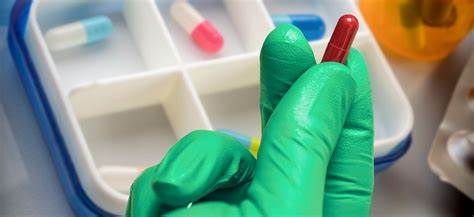

Bienvenido a la Farmacoterapia
La farmacoterapia es una rama esencial de la medicina que se centra en el uso adecuado de medicamentos para tratar y prevenir enfermedades. A través de un entendimiento profundo de la farmacocinética y farmacodinámica, los profesionales de la salud pueden optimizar los tratamientos y mejorar la calidad de vida de los pacientes. Además de tratar enfermedades agudas, la farmacoterapia es vital en la gestión de enfermedades crónicas, asegurando que los pacientes mantengan el control de sus condiciones a lo largo del tiempo.
¿Qué es la Dosificación?
La dosificación es el proceso mediante el cual se determina la cantidad exacta de un medicamento que debe administrarse a un paciente. Este proceso no solo considera factores como la edad y el peso del paciente, sino también su estado de salud general, la presencia de otras condiciones médicas, y la respuesta al tratamiento. Una dosificación incorrecta puede llevar a la ineficacia del tratamiento o a efectos adversos graves, por lo que es crucial seguir las recomendaciones médicas y realizar ajustes cuando sea necesario.
Importancia de la Farmacoterapia
En la medicina moderna, la farmacoterapia es una herramienta clave para controlar enfermedades y mejorar la salud de los pacientes. Permite tratar una amplia variedad de afecciones, desde infecciones comunes hasta enfermedades crónicas complejas. Además, la farmacoterapia también incluye el monitoreo continuo de los efectos del tratamiento, lo que permite a los médicos ajustar las terapias según sea necesario para obtener los mejores resultados posibles.
Precauciones y Cuidados
Al administrar cualquier medicamento, es vital seguir una serie de precauciones para garantizar la seguridad y eficacia del tratamiento. Esto incluye verificar las interacciones medicamentosas, asegurar el almacenamiento adecuado de los fármacos, y estar atento a cualquier signo de sobredosis o reacción adversa. Los pacientes deben ser instruidos sobre cómo tomar sus medicamentos correctamente y qué hacer en caso de experimentar efectos secundarios.